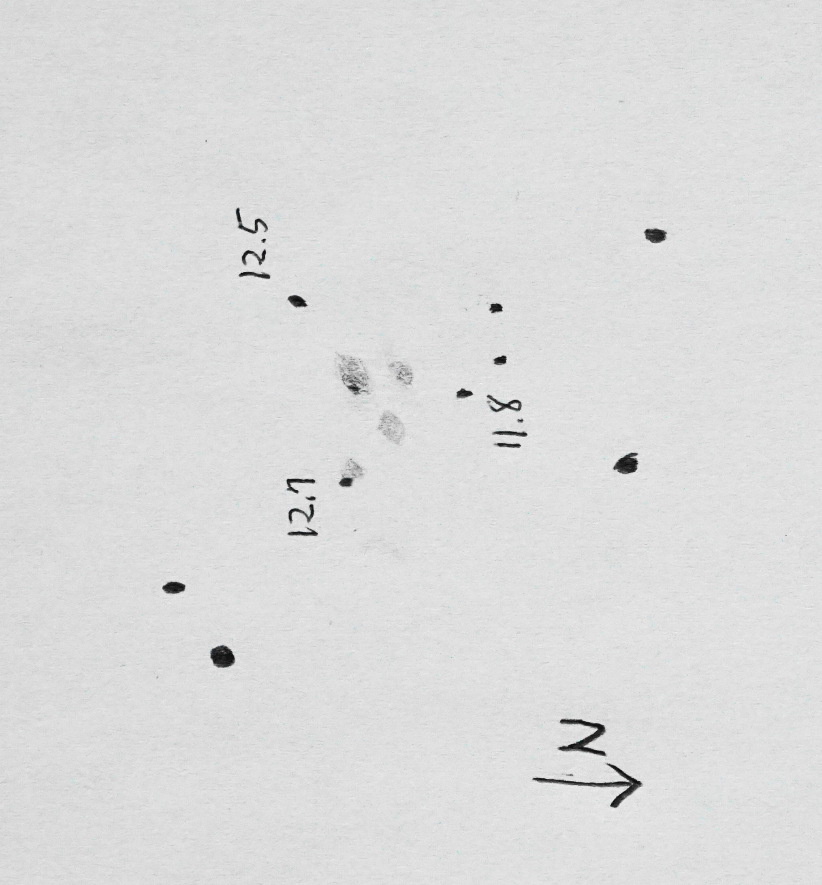

별자리
페가수스
종류
은하군
적경
23시 36.1분
밝기
13.2등급
크기
2.2' * 1.2'
적위
33도 56.9분

별바라기 성도 및 사진 성도를 보며 주변 별을 위치를 모두 확인한 후에 주변시로 보아야 간신히 보인다. 등급을 써 놓은 3개 별이 이등변 삼각형을 이루며, 이 삼각형 안에 4개의 구름조각이 보인다. 오른쪽 위가 7320으로 가장 크고 밝게 보인다. 시계 방향으로 7319, 7318, 7317이다. 주변시로 간신히 보이는 정도여서 은하의 핵과 주변부를 구분할 수는 없었다.
7320 왼쪽에 밝은 핵이 있는 느낌이었다. (나중에 성도에서 찾아 보니 13.2 등급의 별이 있다)
7318 7318은 두 개의 은하이나 안시 관측에서는 구분할 수 없었다.
7317은 가장 작게 보였으며 12.7 등급 별에 가려져 존재감이 가장 적었다.
주변에 더 많은 별들이 보였지만 특징적인 모양의 별을 제외하고 생략했다.18" 238배 시야: 28'
망원경 종류
Obsession Telescopes 18" F/4.2 UC, 초점거리: 1905mm
아이피스
텔레뷰 Ethos 8mm
Filter
관측일시
2021. 11. 6. 21:00
관측장소
강원 화천군
4
2
약 6등급
4
기타 관측 환경
위 그림은 이튿날 새롭게 옮겨 그린 것이며, 별의 위치는 성도를 보고 정확히 맞추었다. 원본 그림 참조. 스케치 준비를 제대로 못했고, 빨간 조명 아래 딱딱한 빨간색연필이라 스케치에 최악의 상황이었다. 그래도, 은하들이 단순한 모습이었기에 간단하게 스케치를 마칠 수 있었다.
오베션 후기: 미동 장치 없이 손으로 움직임에도 흔들림이 없다. 고배율에서도 불편함을 못 느낀다. 경도 위도를 동시에 움직일 때만 저항이 살짝 느껴지나 크게 신경쓰이지 않을 정도로 매우 부드럽다. 신기하다. 그리고, 초점 미세 조정도 매우 편리하다. 안시 관측에 꼭 필요한 기능이 잘 구현되어 있다.
친구 지현이가 0.5도 북쪽의 NGC 7331부터 스타호핑으로 찾아 갔다. 함께한 친구의 소감이다. "2억 8천만 광년 거리의 은하들을 끈질기게 추적해서 마침내 찾아내어 관찰할 때 정말 짜릿한 느낌이 온몸에 전해졌어. 명근이와 함께해서 더 즐거운 탐험이었어ㆍ고마워~☆"
"지현아, 나도 고마워~^^ 18인치 망원경은 정말 감동이다!!!"
97/9/5 별바라기 홈 (starflower2020@protonmail.com)